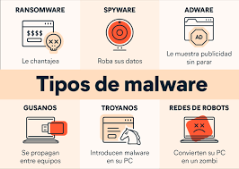

En este sitio, nuestro propósito eorcionarte información y consejos para mantener tu seguridad en línea.
A medida que más aspectos de nuestra vida diaria se trasladan al mundo digital, es crucial estar informado y protegido contra diversas amenazas en línea.
Nuestro objetivo es ayudarte a navegar el mundo digital de manera segura, ofreciéndote las mejores prácticas y recursos para proteger tu información personal y privacidad. La seguridad en línea es fundamental en la era digital, y queremos asegurarnos de que estés bien equipado para enfrentar cualquier desafío que puedas encontrar. Ya sea que estés navegando por internet, utilizando redes sociales, comprando en línea o simplemente enviando correos electrónicos, este sitio te proporcionará la información necesaria para protegerte y mantener tu información segura.
Consejos Generales de Seguridad
Mantén tu software y sistemas operativos actualizados para protegerte de las últimas vulnerabilidades. Usar programas antivirus y realizar análisis regularmente puede ayudarte a detectar y eliminar posibles amenazas. No hagas clic en enlaces sospechosos ni descargues archivos de fuentes desconocidas. La autenticación de dos factores proporciona una capa adicional de seguridad que puede proteger tus cuentas de accesos no autorizados. Además, asegúrate de que tus dispositivos estén configurados para bloquearse automáticamente después de un período de inactividad. Estas prácticas básicas pueden mejorar significativamente tu seguridad en línea. También es importante ser consciente de los sitios web que visitas y asegurarte de que sean seguros, utilizando herramientas como navegadores seguros y extensiones de seguridad. Mantente informado sobre las últimas amenazas de seguridad y adopta medidas proactivas para protegerte contra ellas.
Protección de Contraseñas
Usar contraseñas fuertes y únicas para cada cuenta es esencial para mantener la seguridad de tu información. Combina letras, números y caracteres especiales para crear contraseñas difíciles de adivinar. Cambia tus contraseñas regularmente y evita utilizar la misma contraseña en múltiples sitios. No compartas tus contraseñas con nadie y evita escribirlas en lugares accesibles. Utilizar un gestor de contraseñas puede ayudarte a almacenar y generar contraseñas seguras de manera eficiente. Los gestores de contraseñas también pueden autocompletar tus credenciales, lo que reduce el riesgo de que tus contraseñas sean vistas por otras personas. Además, considera la posibilidad de habilitar la autenticación de dos factores (2FA) siempre que sea posible. Esta capa adicional de seguridad requiere no solo tu contraseña, sino también un código que se envía a tu dispositivo móvil, lo que dificulta aún más el acceso no autorizado a tus cuentas.
Seguridad en Redes Sociales
Configura correctamente las opciones de privacidad de tus cuentas de redes sociales para controlar quién puede ver tu información. Ten cuidado con la información personal que compartes en línea, como tu dirección, número de teléfono y ubicación, ya que esta información puede ser utilizada por personas con malas intenciones. Desconfía de mensajes o solicitudes de amistad de personas que no conoces, ya que podrían ser intentos de phishing. Revisa regularmente tu actividad y configuración de seguridad para asegurarte de que tu cuenta no haya sido comprometida. Ser consciente de lo que compartes en redes sociales puede protegerte de muchos riesgos. Además, ten cuidado con los enlaces y aplicaciones de terceros que permites en tus cuentas de redes sociales, ya que algunos pueden intentar acceder a tu información personal o instalar malware en tus dispositivos.
Protección contra el Malware

Evita descargar software de sitios web no oficiales o desconocidos, ya que estos pueden contener malware. No abras correos electrónicos o archivos adjuntos de remitentes desconocidos o sospechosos, ya que podrían infectar tu dispositivo con malware. Instala y actualiza regularmente software anti-malware para proteger tu dispositivo de amenazas conocidas y nuevas. Realiza copias de seguridad periódicas de tus datos importantes para prevenir pérdidas en caso de una infección de malware. Mantente informado sobre las últimas amenazas de malware y las mejores prácticas para evitarlas, de modo que puedas proteger tus dispositivos y datos personales de manera efectiva. Además, considera utilizar una red privada virtual (VPN) cuando navegues por internet, especialmente en redes Wi-Fi públicas, para añadir una capa adicional de seguridad y proteger tu privacidad en línea.
Recursos y Enlaces Útiles
INCIBE - Guías y Tutoriales: El Instituto Nacional de Ciberseguridad ofrece una variedad de guías y tutoriales para ayudarte a mejorar tu seguridad en línea. Estos recursos están diseñados tanto para usuarios individuales como para empresas, proporcionando información práctica y consejos útiles.
OSI - Guías de Seguridad: La Oficina de Seguridad del Internauta proporciona recursos detallados sobre cómo protegerte de las amenazas en línea. Sus guías abarcan una amplia gama de temas, desde la protección de dispositivos móviles hasta la seguridad en redes sociales.
CISA - Cybersecurity: La Agencia de Seguridad de Infraestructura y Ciberseguridad de Estados Unidos ofrece consejos y herramientas para protegerte de las ciberamenazas. CISA trabaja para mejorar la seguridad de la infraestructura crítica y proporcionar orientación a individuos y organizaciones.
Stay Safe Online: Esta iniciativa proporciona recursos educativos para ayudar a los usuarios a mantenerse seguros en el entorno digital. Stay Safe Online ofrece consejos prácticos, guías y herramientas para mejorar tu seguridad en línea y proteger tu privacidad.